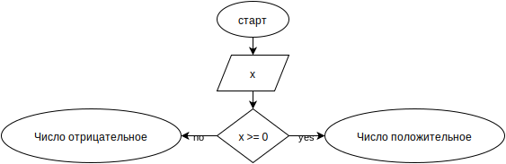

Цисаренко Владислав
Урок 1
Задание: Нарисуйте блок-схему алгоритма, который проверяет значение входного параметра x, и если это значение больше или равно 0, то возвращает в качестве результата строку "Число положительное", в противном случае - строку "Число отрицательное".

var x = 3;
x >= 0 ? "Число положительное" : "Число
отрицательное";